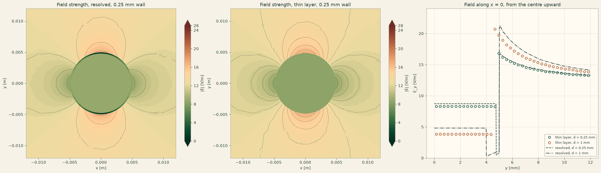
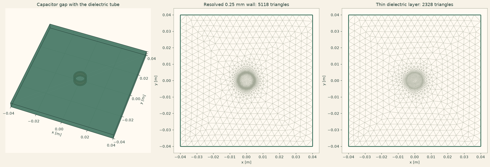

Docs › Examples › Dielectric shielding by a thin high-permittivity shell
Electrostatics · 2D
Dielectric shielding by a thin high-permittivity shell
A tube with a thin wall of relative permittivity 20 sits between two capacitor plates and screens its inside; the wall is resolved once and replaced by a thin dielectric layer once, for four wall thicknesses.
Run locally with OneSimulation. The example downloads are free. Running them requires an activated runtime. Runtime Alpha 0.2.1a7 · CPython 3.13 on macOS (Apple Silicon), Ubuntu 22.04 (x86-64), and Windows x64. Installation and activation · View pilot plans. Scope of the reference checks.

What it computes
OneSimulation reads the capacitor gap and the tube walls from STEP files, cuts them to their mid-plane and solves electrostatics with quadratic triangles. The resolved models mesh the wall as its own region; the thin model carries the displacement flux along the mid-line of the wall and lets the potential jump across it, on less than half the elements. The script that builds the STEP files comes with the notebook.
What it checks
The resolved walls give the field inside the tube within 1 % of the exact coated-cylinder solution (0.8502, 0.6973, 0.5417 and 0.3842 of the applied field against 0.8484, 0.6945, 0.5384 and 0.3810 for 0.1, 0.25, 0.5 and 1 mm). The thin layer deviates from the resolved wall by -2.0, -5.0, -10.0 and -20.1 %, in proportion to the wall thickness over the tube radius as expected of a first-order thin-layer model; the added capacitance follows likewise (35.8 against 36.5 fF/m for the 0.1 mm wall).
Geometry
The notebook starts at the import of the CAD files dielectric_shell_field_shielding.step, dielectric_shell_field_shielding_core_100.step, dielectric_shell_field_shielding_core_1000.step, dielectric_shell_field_shielding_core_250.step, dielectric_shell_field_shielding_core_500.step, dielectric_shell_field_shielding_midline_100.step, dielectric_shell_field_shielding_midline_1000.step, dielectric_shell_field_shielding_midline_250.step, dielectric_shell_field_shielding_midline_500.step, dielectric_shell_field_shielding_wall_100.step, dielectric_shell_field_shielding_wall_1000.step, dielectric_shell_field_shielding_wall_250.step, dielectric_shell_field_shielding_wall_500.step: STEP (AP242), readable by any CAD program, with the names of the faces that the boundary conditions use. Put them next to the notebook.

The geometry script
The script dielectric_shell_field_shielding_geometry.py builds the geometry with the CAD objects of OneSimulation and writes the files. Change a dimension there, run it, and run the notebook again.
"""Geometry of the OneSimulation example "Dielectric shielding by a thin high-permittivity shell".
Builds the air between the plates of a capacitor of two parallel plates, 80 mm x 80 mm and 5 mm deep,
with the CAD objects of OneSimulation and writes dielectric_shell_field_shielding.step; its top face is
the group terminal (the upper plate), its bottom face the group ground (the lower plate) and its two
sides the group insulated. A tube of 5 mm outer radius sits at the centre, with a wall of 0.1, 0.25,
0.5 or 1 mm. For each wall thickness, in micrometres, the wall goes to
dielectric_shell_field_shielding_wall_<um>.step, the interior to dielectric_shell_field_shielding_core_<um>.step
and the cylinder up to the middle of the wall to dielectric_shell_field_shielding_midline_<um>.step.
The example computes on the cross-section z = 2.5 mm.
"""
from onesim.cad.d3 import AnnularCylinder, Box, Cylinder
side, depth, radius = 0.08, 0.005, 0.005
gap = Box(length=side, width=side, height=depth, origin=(-side / 2, -side / 2, 0.0))
faces = gap.boundaries
gap = gap.grouped(
terminal=faces.y_max, ground=faces.y_min, insulated=faces.x_min | faces.x_max
)
gap.save("dielectric_shell_field_shielding.step")
for micrometres in (100, 250, 500, 1000):
wall = micrometres * 1e-6
AnnularCylinder(inner_radius=radius - wall, outer_radius=radius, length=depth).save(
f"dielectric_shell_field_shielding_wall_{micrometres}.step"
)
Cylinder(radius=radius - wall, length=depth).save(
f"dielectric_shell_field_shielding_core_{micrometres}.step"
)
Cylinder(radius=radius - wall / 2, length=depth).save(
f"dielectric_shell_field_shielding_midline_{micrometres}.step"
)The notebook
The complete notebook, cell by cell. Run it to produce the figures and the comparison printout.
A thin layer of a material with high permittivity — a ceramic coating, a water film, a filled polymer — guides the electric flux along itself and screens what lies behind it. A thin dielectric layer replaces the layer by a face: the displacement flux along it is carried with \(\varepsilon_2 d\),
and the potential may jump across it with the normal capacitance per area \(\varepsilon_2/d\), so a layer of high or of low permittivity is covered by the same condition.
Two parallel plates 80 mm apart, 80 mm wide, hold a voltage of 1 V across air. In the middle sits a tube of outer radius \(b=5\) mm with a wall of thickness \(d\) and relative permittivity \(\varepsilon_r=20\); inside the tube is air. The electrostatic potential solves
| edge | condition | |---|---| | terminal, upper plate | \(V=1\) V | | ground, lower plate | \(V=0\) | | insulated, left and right | \(D_n=0\) |
Far from the tube the field is \(E_0=12.5\) V/m. Two models are solved for walls of \(d=0.1,\;0.25,\;0.5,\;1\) mm: the resolved model meshes the wall as its own region, the thin model puts the dielectric layer on the circle \(r=b-d/2\) in the middle of the wall. The thin model is a first-order approximation in \(d/b\): it keeps the air in the place of the wall and carries the flux along the layer on the mid-line, so its error grows in proportion to the thickness of the wall.
The space between the plates and the tube come from the CAD files dielectric_shell_field_shielding*.step; the script dielectric_shell_field_shielding_geometry.py builds them with the CAD objects of OneSimulation. The two-dimensional model is their mid-plane section.
Reference. A coated cylinder in a uniform field of an unbounded medium has a uniform field inside (Jackson, Classical Electrodynamics, 3rd ed., problem 4.10). With core and surroundings of \(\varepsilon_0\) and a shell of \(\varepsilon_r\varepsilon_0\) between \(a=b-d\) and \(b\),
The plates are 16 tube radii apart, so they change the field inside the tube by about a percent.
import numpy as np
from onesim.cad.exchange import load
from onesim.materials import regionwise
from onesim.meshing import TriangularMesher, interface
from onesim.numerics import Numerics
from onesim.numerics.fem import FiniteElement, Lagrange
from onesim.numerics.linear import SparseDirect
from onesim.physics.electrostatics import (
FixedPotential,
PoissonEquation,
ThinDielectricLayer,
ZeroNormalElectricDisplacement,
)
from onesim.simulation import Problem, Simulation
from onesim.visualization import plots, theme
theme.set()Geometry and mesh
load returns each part, section its mid-plane cross-section. The resolved meshes follow the wall with elements of half its thickness; the thin model needs only the circle of the mid-line, with elements of 0.6 mm around the tube.
name = "dielectric_shell_field_shielding"
mid = lambda part: load(f"{name}{part}.step").section((0, 0, 1), origin=(0, 0, 0.0025))
gap = mid("")
edges = gap.boundaries
radius, walls = 0.005, (100, 250, 500, 1000)
meshes = {}
for micrometres in walls:
thickness = 1e-6 * micrometres
meshes[micrometres, "resolved"] = TriangularMesher(
target_size=0.004,
embedded_regions=(
mid(f"_core_{micrometres}").named("core"),
mid(f"_wall_{micrometres}").named("wall"),
),
region_sizes={"wall": thickness / 2, "core": 0.0008},
).generate(gap)
meshes[micrometres, "thin layer"] = TriangularMesher(
target_size=0.004,
embedded_regions=(mid(f"_midline_{micrometres}").named("core"),),
region_sizes={"core": 0.0006},
).generate(gap)
fig = plots.figure(1, 3, size=(18, 6))
plots.geometry(
[
load(f"{name}.step").named("air between the plates"),
load(f"{name}_wall_1000.step").named("tube wall, 1 mm"),
],
labels=False,
camera=plots.Camera(elevation=55, azimuth=-70),
title="Capacitor gap with the dielectric tube",
ax=fig[0],
)
plots.mesh(
meshes[250, "resolved"],
groups=("all",),
legend=False,
title=f"Resolved 0.25 mm wall: {meshes[250, 'resolved'].cell_count} triangles",
ax=fig[1],
)
plots.mesh(
meshes[250, "thin layer"],
groups=("all",),
legend=False,
title=f"Thin dielectric layer: {meshes[250, 'thin layer'].cell_count} triangles",
ax=fig[2],
)
plots.show()Models
regionwise gives the wall of the resolved model its permittivity; ThinDielectricLayer acts on the faces between the two regions of the thin mesh, which interface returns.
epsilon0, er = 8.854187817e-12, 20.0
numerics = Numerics(
spatial=FiniteElement(element=Lagrange(order=2)), linear_solver=SparseDirect()
)
models, results = {}, {}
for (micrometres, kind), mesh in meshes.items():
law = (
regionwise({"wall": er * epsilon0}, default=epsilon0, unit="F/m")
if kind == "resolved"
else regionwise((), default=epsilon0, unit="F/m")
)
model = PoissonEquation(domain=gap.domain(), permittivity=law)
layer = (
(
ThinDielectricLayer(
physics=model,
boundary=interface(mesh, "background_core"),
thickness=1e-6 * micrometres,
permittivity=er * epsilon0,
),
)
if kind != "resolved"
else ()
)
problem = Problem(
name=f"Capacitor with a tube, {kind}",
geometry=gap,
physics=(model,),
boundary_conditions=(
FixedPotential(boundary=edges.terminal, physics=model, value=1.0),
FixedPotential(boundary=edges.ground, physics=model, value=0.0),
ZeroNormalElectricDisplacement(boundary=edges.insulated, physics=model),
)
+ layer,
)
models[micrometres, kind] = model
results[micrometres, kind] = Simulation(
problem=problem, mesh=mesh, numerics=numerics
).solve_stationary()Results
The field in the centre of the tube against the coated-cylinder formula, and the capacitance the tube adds to the empty capacitor (\(\varepsilon_0\,w/h=8.854\) pF/m per metre of depth), from the charge on the upper plate.
exact = (
lambda d: 4 * er / ((1 + er) ** 2 - (er - 1) ** 2 * (radius - d) ** 2 / radius**2)
)
E0, empty = 1.0 / gap.size[1], epsilon0 * gap.size[0] / gap.size[1]
field = {
key: -result.field(models[key].electric_field).evaluate(np.array([[0.0, 0.0]]))[
0, 1
]
/ E0
for key, result in results.items()
}
added = {
key: result.field(models[key].potential).reaction(edges.terminal) - empty
for key, result in results.items()
}
print(
"wall [mm] d/b E_in/E_0 exact resolved thin layer thin vs resolved added C' resolved [fF/m] thin layer [fF/m]"
)
for micrometres in walls:
a, b = field[micrometres, "resolved"], field[micrometres, "thin layer"]
print(
f"{micrometres / 1e3:9.2f} {micrometres / 5e3:6.2f} {exact(1e-6 * micrometres):16.4f} {a:10.4f} {b:12.4f} {100 * (b / a - 1):+16.1f} % "
f"{1e15 * added[micrometres, 'resolved']:26.2f} {1e15 * added[micrometres, 'thin layer']:19.2f}"
)For a wall of a fiftieth of the radius the thin layer gives the shielding of the resolved wall within 2 % on a fraction of the elements; at a fifth of the radius it shields about 20 % too much. The deviation falls in proportion to \(d/b\), as expected of a first-order thin-layer model.
Figure
The field strength around the 0.25 mm wall in both models, and the field along the vertical line from the centre of the tube upward for the 0.25 mm and the 1 mm wall.
fig = plots.figure(1, 3, size=(21, 6))
for panel, kind in enumerate(("resolved", "thin layer")):
plots.surface(
results[250, kind].field(models[250, kind].electric_field),
component=lambda E, position: np.linalg.norm(E, axis=1),
limits=(0, 25),
contours=11,
subdivisions=2,
xlimits=(-0.012, 0.012),
ylimits=(-0.012, 0.012),
xlabel="x [m]",
ylabel="y [m]",
label="|E| [V/m]",
title=f"Field strength, {kind}, 0.25 mm wall",
ax=fig[panel],
)
y = np.linspace(0.0, 0.012, 601)
line = np.column_stack((np.zeros_like(y), y))
marks = np.column_stack((np.zeros(40), np.linspace(0.00015, 0.01185, 40)))
plots.line(
points={
f"thin layer, d = {m / 1e3:g} mm": (
1e3 * marks[:, 1],
-results[m, "thin layer"]
.field(models[m, "thin layer"].electric_field)
.evaluate(marks)[:, 1],
)
for m in (250, 1000)
},
reference={
f"resolved, d = {m / 1e3:g} mm": (
1e3 * y,
-results[m, "resolved"]
.field(models[m, "resolved"].electric_field)
.evaluate(line)[:, 1],
)
for m in (250, 1000)
},
vlines=[1e3 * radius],
ylimits=(0, 24),
xlabel="y [mm]",
ylabel="E_y [V/m]",
title="Field along x = 0, from the centre upward",
legend="lower right",
ax=fig[2],
)
plots.show()Going further
Change the permittivity of the wall, or give the layer a permittivity that varies along the circle (a callable of the position) to model a coating of uneven quality.